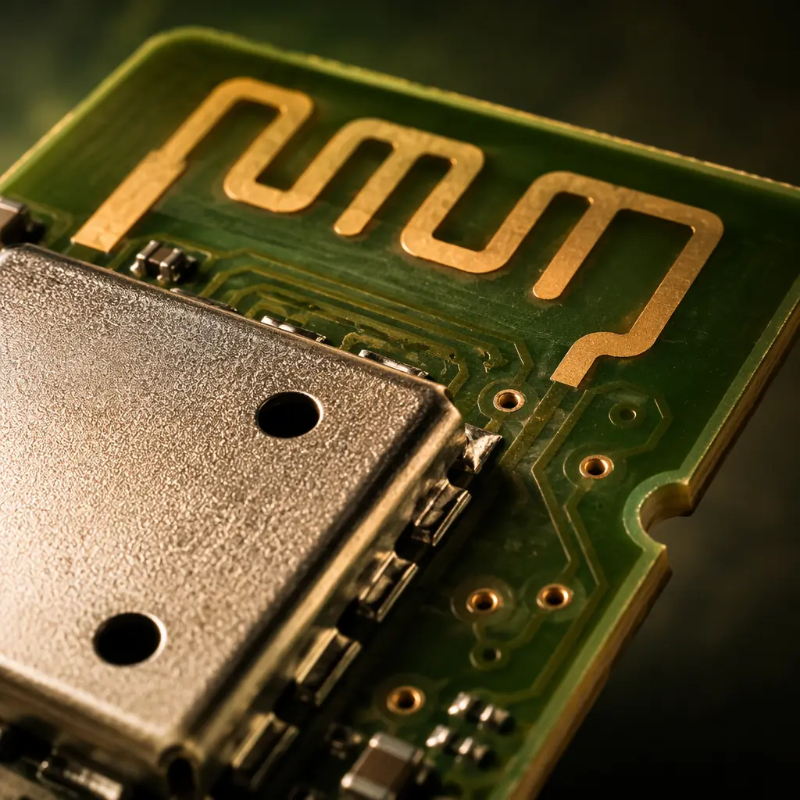
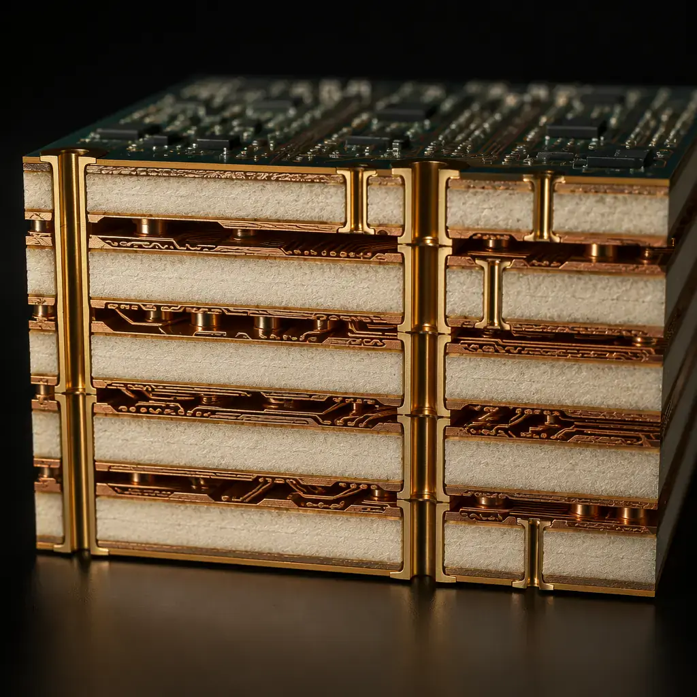
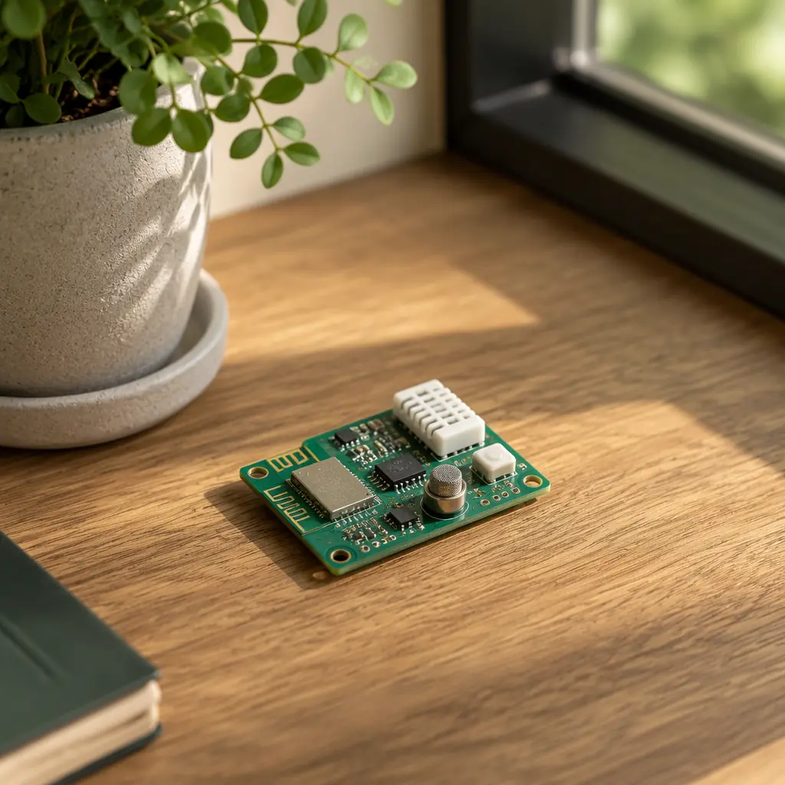

The global IoT PCB market will reach $18.4 billion by 2028, driven by smart home devices, industrial sensors, wearable health monitors, and connected vehicle modules. Every single one of those billions of devices starts with a printed circuit board — and that PCB has to be smaller, more power-efficient, and more reliable than anything built for desktop electronics.
At Huaxing PCBA, we process 250,000 IoT modules per month across BLE beacons, Zigbee hubs, LoRaWAN sensors, NB-IoT trackers, and WiFi-enabled appliances. Our Shenzhen facility is IATF 16949 and ISO 9001 certified, with 8 SMT lines capable of 0201 passive placement and 0.3mm pitch BGA — the scale and precision IoT production demands.

What Makes IoT PCBs Fundamentally Different
An IoT PCB is not just a smaller version of a standard PCB. It must satisfy four constraints simultaneously — and failing any one of them means the product fails in the field.
Integrated Wireless Connectivity
Every IoT PCB carries at least one RF interface — BLE, WiFi, Zigbee, LoRa, NB-IoT, or LTE-M. This means the board must include antenna matching networks, impedance-controlled transmission lines, and RF shielding. A single impedance discontinuity on a 50Ω trace can degrade range by 30% or more. For multi-radio designs (BLE + WiFi + LTE-M on one board), see our impedance control guide for stackup and trace width calculations.
Ultra-Low Power Budget
A BLE sensor tag on a CR2032 coin cell must run for 2–5 years. That means quiescent current in single-digit microamps, efficient DC-DC conversion with minimal ripple, and careful ground plane partitioning to prevent digital switching noise from waking up the analog front-end. Power supply design on IoT PCBs is radically different from line-powered electronics — every microamp counts.
Mixed-Signal Coexistence
An IoT sensor PCB typically has a sensitive analog front-end (sensor signal conditioning, ADC input) sitting millimeters away from a noisy digital section (MCU, RF transceiver, switching regulator). Without rigorous ground partitioning and guard rings, digital noise couples into the analog path and corrupts sensor readings. Our PCB materials guide covers low-loss laminates that help mitigate cross-domain interference at RF frequencies.
Environmental Hardening Demands
Industrial IoT sensors operate in -40°C freezer warehouses and +85°C factory floors. Outdoor trackers face rain, UV, and salt spray. Medical wearables must survive repeated flex cycles and body fluids. Each environment demands specific PCB materials, conformal coating, and connector sealing strategies — choices you make at the design stage that determine field failure rates months later.
Factory Reality: A common failure pattern we see in incoming IoT designs is placing the antenna matching network on a different layer than the antenna feed point, adding an uncontrolled via in the RF path. That single via creates a 5–8Ω impedance bump — invisible on a schematic, devastating to range. Our DFM review catches this before fabrication.

Critical Design Decisions That Determine IoT PCB Success
The difference between an IoT PCB that works on the first prototype and one that goes through five board spins comes down to a handful of design decisions made before the first Gerber file is generated.
PCB Stackup: 4-Layer Minimum, 6-Layer for Multi-Radio
A 2-layer board works for a blinking LED. It does not work for an IoT device with a radio and a sensor. A 4-layer stackup (signal/GND/PWR/signal) provides a contiguous ground plane essential for impedance control and EMI suppression. For devices combining BLE, WiFi, and cellular radios, a 6-layer stackup with dedicated RF routing layers and buried ground planes becomes necessary. Our facility handles up to 32 layers with blind and buried vias — see our HDI technology overview for microvia routing strategies.
Antenna Integration: On-Board vs. External
PCB trace antennas (meandered inverted-F, PIFA) save BOM cost and assembly steps but demand precise keep-out zones and ground plane clearance. A 3mm deviation in the keep-out area can shift the antenna's resonant frequency by 50–80 MHz — enough to push a 2.4 GHz antenna out of band. Chip antennas offer more forgiving layouts but add $0.30–$1.20 to BOM. The trade-off is application-specific: a disposable asset tracker uses a PCB trace; a medical gateway with an external SMA connector uses a chip antenna with a U.FL path. Both require controlled 50Ω impedance from the transceiver pad to the antenna feed point.
Power Delivery Network (PDN) Design
IoT devices cycle between sleep (microamps), sensor sampling (milliamps), and RF transmission (tens of milliamps) in milliseconds. The PDN must supply clean, stable voltage through these transient current spikes without sagging below the MCU's brown-out threshold. Critical elements: low-ESR decoupling capacitors placed within 2mm of IC power pins, a solid power plane with minimal via inductance, and a ferrite bead or LC filter between the RF section's supply and the rest of the board to prevent conducted EMI.
Sensor Interface Isolation
Analog sensors — thermocouples, strain gauges, electrochemical gas sensors — produce signals in the microvolt to millivolt range. When a BLE radio transmits at +4 dBm on the same PCB, the nearby analog traces can pick up induced voltages that swamp the sensor signal. Proper layout technique: route analog traces on an inner layer sandwiched between ground planes, use a dedicated analog ground region connected to digital ground at a single star point, and place the ADC as close as physically possible to the sensor connector to minimize trace length.
Flex-to-Board Transitions (Wearables)
Wearable and compact IoT products frequently combine a rigid main board with a flexible tail for the battery, display, or sensor connector. The rigid-flex transition zone is the #1 mechanical failure point — repeated bending eventually cracks traces at the stiffener boundary. Our rigid-flex PCB guide covers the critical design rules: teardrop pad entries at the transition, minimum 1.5mm stiffener overlap, and curved trace routing (no 90° corners) in the flex region to distribute bending stress.
| IoT Subtype | Typical Layer Count | Key PCB Requirements | Common Radio |
|---|---|---|---|
| BLE Sensor Tag | 4 | 0201 passives, PCB antenna, coin-cell PDN | BLE 5.0 |
| Indoor Gateway | 6 | Multi-radio isolation, PoE PDN, DDR routing | WiFi 6 + BLE + Thread |
| Outdoor Tracker | 4–6 | Conformal coating, wide-temp laminate, GNSS | LTE-M + GPS |
| Industrial Sensor Node | 6–8 | 4–20mA isolation, RS-485, 24V input | LoRaWAN / NB-IoT |
| Medical Wearable | 4–6 | Flex-rigid, biocompatible finish, ultra-low leakage | BLE 5.0 |
Manufacturing IoT PCBs at Scale: What Your CM Needs
Once your IoT PCB design is validated, the manufacturing partner's capabilities determine whether your 100,000-unit production run yields 98% or 88%. That 10% gap is the difference between hitting your COGS target and burning a quarter's margin on rework.
Precision SMT for Miniaturized Components
IoT PCBs routinely use 0201 (0.6×0.3mm) passives and 0.4mm pitch QFN packages to fit everything on a board the size of a postage stamp. Placement accuracy of ±25μm and solder paste printing with 100μm stencil apertures are non-negotiable. Our 8 SMT lines include Yamaha YSM20R placers with 3D SPI (solder paste inspection) before reflow and automated AOI after — the closed-loop process that catches a missing 0201 capacitor before it becomes a field failure 6 months later.
Impedance-Controlled Fabrication
When your PCB fab produces 10,000 boards and the antenna trace impedance on 500 of them drifts from 50Ω to 58Ω, those 500 boards pass visual inspection but fail range testing. Your CM must provide TDR (time-domain reflectometry) test coupons on every panel and reject lots outside your specified tolerance — typically ±10% for BLE/WiFi, ±5% for LTE and 5G-NR bands. As covered in our impedance control deep-dive, dielectric constant variation across laminate batches is the silent killer of RF yield.
Conformal Coating for Harsh Environments
Outdoor IoT devices need protection against moisture, condensation, and airborne contaminants. Acrylic conformal coating (IPC-CC-830B) applied at 25–75μm thickness protects against humidity and salt spray while remaining reworkable. Silicone coating handles -55°C to +200°C but is harder to remove. For submersible devices, parylene CVD coating provides pinhole-free coverage at 5–25μm — but requires masking of connectors and switches before application, a step that adds 20–30% to assembly cost.
Panel Utilization and Cost Optimization
IoT PCBs are small — a 30×18mm BLE tag yields over 400 units on a standard 18×24-inch panel. But panel utilization drops sharply if your board outline has deep internal cutouts or irregular shapes. Mouse-bite and V-score panelization strategies can recover 8–15% board area. During our DFM review process, we optimize panel layout before fabrication — a step that has saved clients over $0.12 per unit on high-volume IoT production, translating to $12,000 saved per 100,000-unit batch.
Procurement Tip: When qualifying a CM for IoT production, ask for their TDR impedance test report from the last 3 production lots — not a sample, not a capability statement. The variance between lots tells you more about their process control than any certification on their wall. A standard deviation under 2Ω across 3 lots is world-class; over 5Ω means your range-critical products are at risk.

Testing IoT PCBs: Beyond Flying Probe
Standard ICT (in-circuit test) verifies that resistors have the right value and traces aren't shorted. For IoT PCBs, that's the starting line — not the finish line.
RF Performance Testing at Production Scale
Every IoT PCB with a radio should undergo RF parametric testing on the production line — output power, frequency error, and receiver sensitivity at minimum, measured in a shielded enclosure. A board that powers on and advertises BLE packets at -20 dBm instead of 0 dBm (due to a badly soldered antenna matching component) will pass functional test but deliver 40% of its rated range. Production RF test fixtures with pogo-pin RF probes can test 4–8 boards simultaneously with under 10-second cycle time. Our PCB testing methods guide covers the full test hierarchy from bare-board flying probe to system-level functional test.
Current Consumption Profiling
A firmware bug that prevents the MCU from entering deep sleep mode is invisible to most production tests — until your customers discover their battery lasts 3 weeks instead of 2 years. Production-line current profiling measures sleep current, active current, and RF transmit current on every unit against a golden-reference profile. Deviations >15% trigger a failure. This test takes <3 seconds per unit with a programmable DC power analyzer and catches both assembly defects (shorts on decoupling caps) and firmware configuration errors.
Environmental Stress Screening (ESS)
For IoT products targeting industrial or outdoor deployment, sample-based ESS validates design margins: thermal cycling (-40°C to +85°C, 100 cycles), damp heat (85°C/85% RH, 168 hours), and vibration (10–500 Hz sweep, 3 axes). ESS does not catch assembly defects on individual units — it validates that the design and material choices survive the target environment. Failures during ESS are a design problem, not a manufacturing problem.
OTA Update Validation (Connected Devices)
IoT products that support over-the-air firmware updates introduce a unique failure mode: if the board passes production test on firmware v1.0 but the OTA update mechanism has a hardware dependency bug, the entire fleet becomes brickable. Production validation should include at least one OTA update cycle on a sample from each batch, verifying that the bootloader and flash partitioning survive the process. This is not a PCB manufacturing step per se, but your CM should support it as part of a turnkey PCBA service that includes firmware flashing and validation.
Choosing an IoT PCB Manufacturing Partner
Not every PCB manufacturer can build IoT products at production scale. Here are the specific capabilities to verify:
| Capability | Why It Matters for IoT | Huaxing PCBA |
|---|---|---|
| Minimum Passive Size | 0201 passives are standard in compact IoT designs | 0201 (01005 available) |
| Impedance Control | Every RF trace demands controlled impedance | ±5% with TDR coupon on every panel |
| BGA Pitch Capability | Wireless SoCs increasingly use 0.35mm BGA | 0.3mm pitch with X-ray inspection |
| Conformal Coating | Protection for outdoor/industrial IoT | Acrylic, silicone, parylene in-house |
| RF Test Capability | Every radio board needs parametric RF test | Shielded enclosures, 4-up fixtures |
| Certifications | Automotive/medical IoT requires certified supply chain | IATF 16949, ISO 9001, ISO 14001, UL |
| Turnkey Service | Component sourcing + assembly + test under one roof | Full turnkey with 250+ supplier network |
| Minimum Order | Prototyping before scaling to volume | 5–100,000+ units |
Summary: The IoT PCB Production Playbook
Building IoT PCBs at production scale requires getting four things right simultaneously: the RF design (impedance control, antenna matching), the power architecture (ultra-low quiescent current, clean PDN), the mixed-signal layout (ground partitioning, sensor isolation), and the manufacturing partner (precision SMT, RF test, conformal coating). Miss any one of these and your product launch timeline slips by months.
At Huaxing PCBA, our IoT PCB manufacturing line processes over 250,000 wireless modules monthly — from coin-cell BLE beacons to multi-radio industrial gateways. Every panel includes TDR impedance test coupons, and every assembled board passes RF parametric test in shielded fixtures before shipping. Our engineering team provides free DFM review for IoT designs, including antenna keep-out zone verification, PDN decoupling analysis, and panel utilization optimization.
Ready to move your IoT product from prototype to production? Contact our engineering team for a project-specific consultation, or explore our turnkey PCBA guide for end-to-end manufacturing workflows. If you are still in the design phase, our DFM best practices and impedance control reference will help you avoid the most common production pitfalls before Gerber generation.